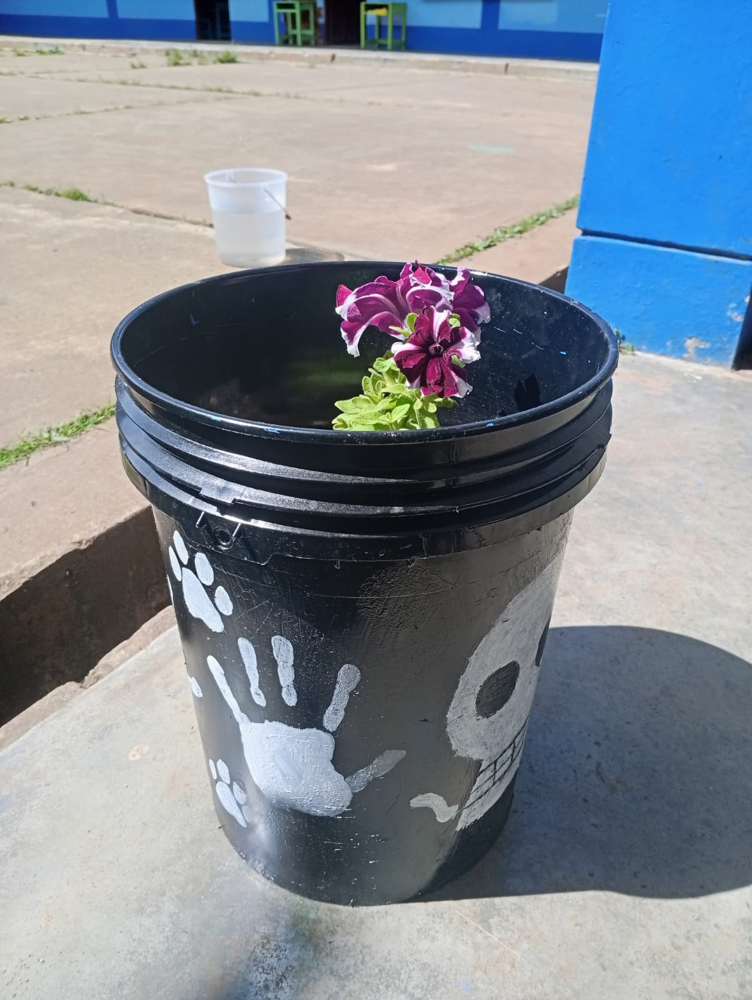
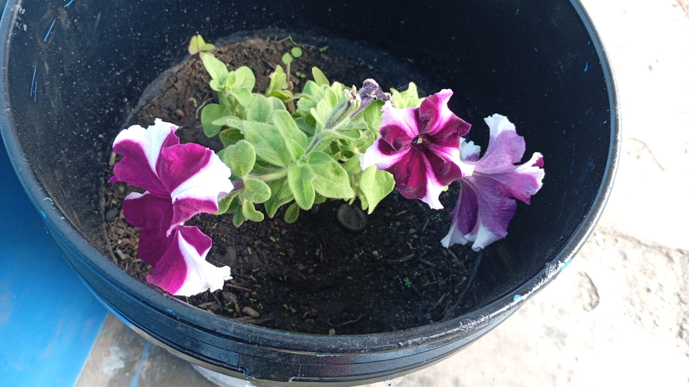

Un homenaje a la tradición, la vida y la naturaleza
1. El color negro: representa el misterio, el duelo y el mundo de los muertos. En la tradición del Día de Muertos, este color simboliza el camino que separa la vida de la muerte, un espacio de respeto hacia las almas que regresan.
2. Las manos blancas: unión entre vivos y muertos. Simbolizan conexión, afecto y guía, representando la pureza del alma, la luz y la paz espiritual.
3. La calavera: vida y muerte en equilibrio. Es el símbolo más icónico del Día de Muertos; no representa terror, sino memoria, celebración y amor eterno.
4. Las huellas: el paso de las almas. Si el balde tiene huellas, representan el paso de las almas que regresan en la noche del 1 y 2 de noviembre, guiadas por flores de cempasúchil o luces.
5. Significado general: el balde negro guarda el recuerdo, las manos lo protegen, y la calavera preside el ciclo entre la vida y la muerte. En conjunto, representa el abrazo entre lo terrenal y lo espiritual.
La Petunia es una planta ornamental de la familia Solanaceae, originaria de América del Sur. Es apreciada por sus flores en tonos rosados, violetas, rojos, blancos y azules, y su nombre proviene del término indígena brasileño “petum”, que significa tabaco, por su parentesco botánico.
Características: La petunia es una planta herbácea que puede alcanzar entre 15 y 60 cm de altura. Sus flores acampanadas desprenden un aroma suave y florecen en primavera y verano, atrayendo mariposas y abejas.
Cuidados: Prefiere suelos fértiles, bien drenados y sol directo. Requiere riego moderado y debe protegerse de las heladas.
Simbolismo: Representa la paz interior, el consuelo y el amor sereno. Regalar una petunia expresa afecto duradero y gratitud.
